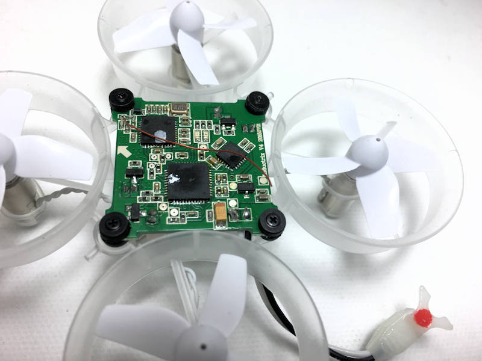
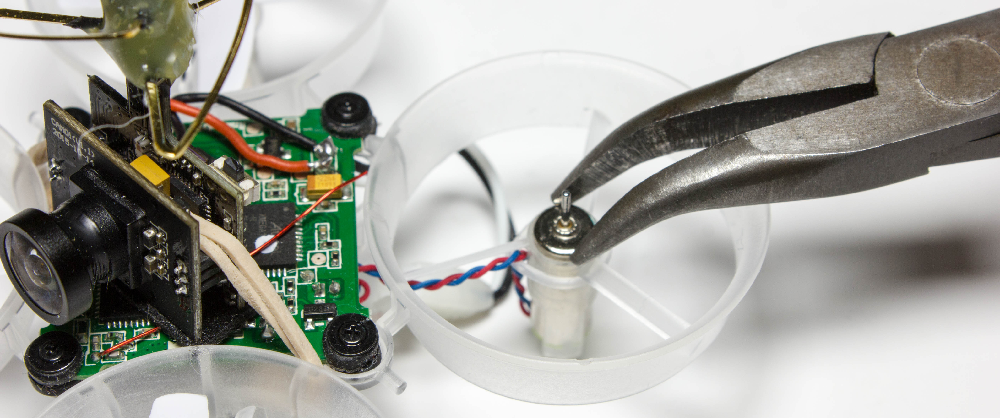
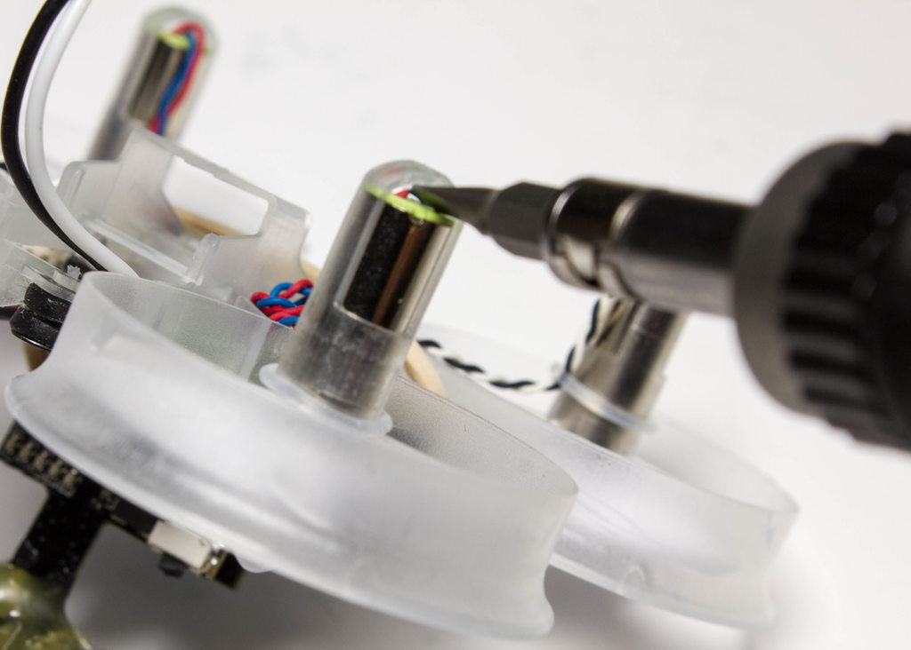

This is a very entry-level build, in that it is both affortable and easy to fly. Truly, the biggest cost will be a transmitter and device to view the video from. If you already own a pair of goggles and a transmitter that can bind to Spektrum devices, then you are ahead of the game. Below is a list of all of the items needed for this build. There is also a list of things that are not required, but that are nice to have. Links will be provided for the items.
Required:The first step will be to prepare the Inductrix for the mounting of the camera. From the factory, the Inductrix comes with a thin, plastic cover. To remove this, undo the two sides where the cover slips onto two notches. After the cover has been removed, it should look like this. Be careful to not damage the antenna; it is the small copper wire on top of the PCB. If it gets in the way later in the build, just gently move it to the side.
Adding the CameraNow, it is time to prepare the camera module. Using wire-cutters, cut off the camera power leads to about 1.5 inches. Then remove a small amount of the cover from the ends, and tin the wire. Also, tin the solder pads on the PCB as well. The pads that we will be using can be seen below. Be careful not to bridge these two points: this will cause a short in the entire system. Pay close attention to which pad is positive (red) and which is negative (black). Once you have prepare both sides, it is time to solder them together. Solder positive to postive, and negative to negative.
Now, the next step depends on whether you have the 3D-printed camera mount or not. If you do not, simply use double-sided foamtape to secure the camera to the center of the board, with the camera facing towards the front. Then wrap a small rubberband around the two notches that previously held the plastic cover on, wrapping it over the camera. The above picure shows this. If, however, you have the 3D-printed mount, then you will need to unscrew the front 3 screws of the PCB. With these undone, slide the mount into place, then reinstall the screws.
Upgrading Motors (optional)If you are upgrading motors, then the first step will be to remove the stock ones. First, use pliers to remove the motor connectors from the PCB. This is on the underside of the Inductrix. Then, using a flathead screwdriver, apply pressure to the underside of the motor, sliding it up and out of its casing. Remove the propellor by leveraging a screwdriver between the propellor and the motor. Installing the new motors simply involves determining which ones are CCW and CW, and placing them accordingly. When sliding them back into the pods, slide them until the are flush with the top; do not press them down too far, as this will damage the wires on the bottom. Reinstall the propellors, and you're done!